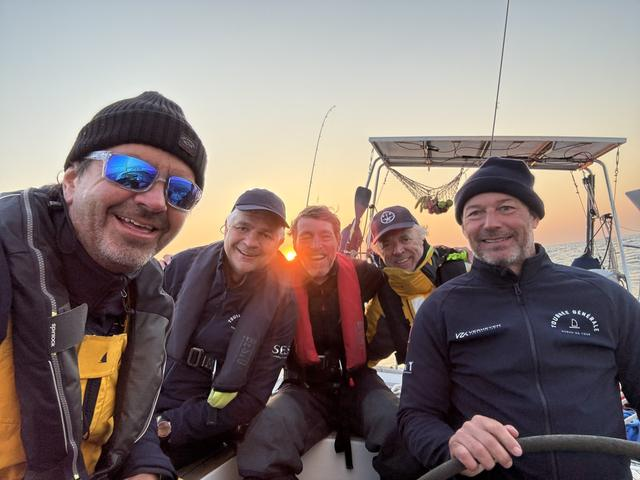
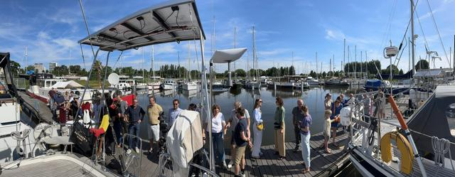
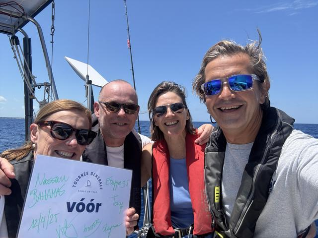
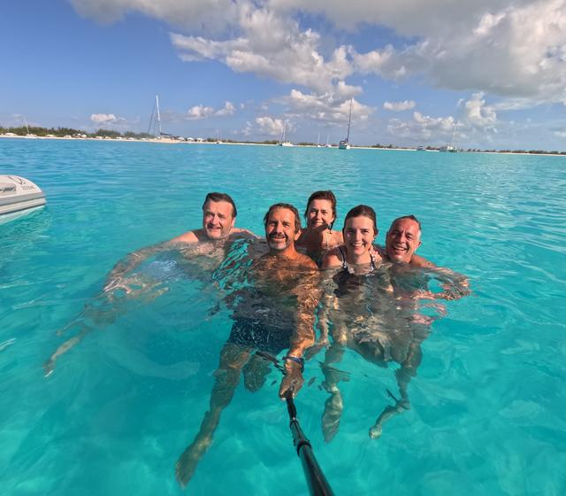
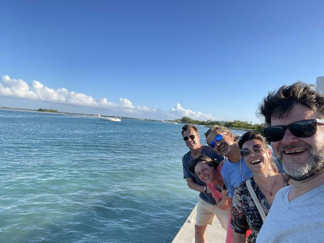
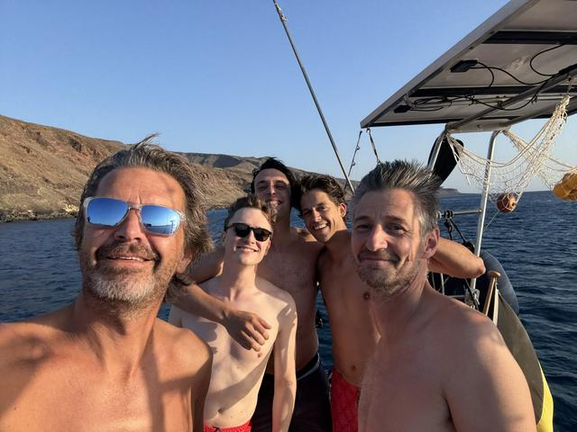
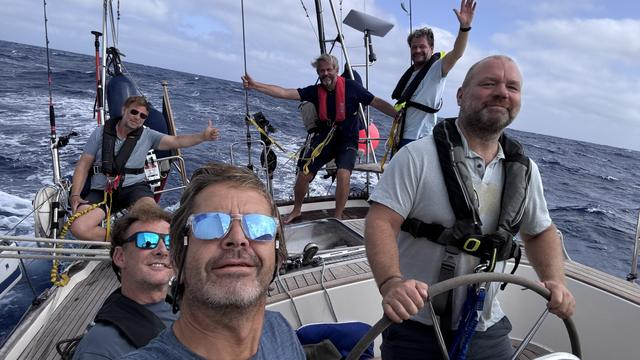
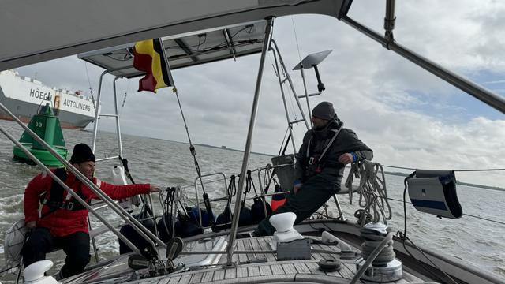

Alle verhalen
 17 augustus 2025Etappe 15: den Bloemekee14 augustus 2025Update: aangepaste aankomst
17 augustus 2025Etappe 15: den Bloemekee14 augustus 2025Update: aangepaste aankomst 3 augustus 2025Etappe 14: gulle oceaan wuift Nomad uit
3 augustus 2025Etappe 14: gulle oceaan wuift Nomad uit 3 juli 2025Etappe 13: ne zware maar o zo de moeite
3 juli 2025Etappe 13: ne zware maar o zo de moeite
22 juni 2025Etappe 12: stijlvol USA uitwuiven 30 mei 2025Etappe 11: heroïsch, legendarisch, iconisch
30 mei 2025Etappe 11: heroïsch, legendarisch, iconisch
19 mei 2025La Grande Finale 16 mei 2025Etappe 10: een geslaagde expeditie naar het onbekende
16 mei 2025Etappe 10: een geslaagde expeditie naar het onbekende
2 mei 2025Etappe 9.5: Bahamas in style
25 maart 2025Etappe 9: We Looooove the Bahamas
18 maart 2025Etappe 8: dolle pret en fauna weelde 1 maart 2025Etappe 7: family time in Paradise
1 maart 2025Etappe 7: family time in Paradise 17 januari 2025Terugblik op deel 13 januari 2025TG socials 2.0
17 januari 2025Terugblik op deel 13 januari 2025TG socials 2.0 2 januari 2025Etappe 5: eindelijk Trans-at time!
2 januari 2025Etappe 5: eindelijk Trans-at time!
22 november 2024Etappe 4: de langste tot nu toe
10 oktober 2024Etappe 3 - Nomadness 14 september 2024Etappe 2 - knallen naar Madeira
14 september 2024Etappe 2 - knallen naar Madeira 20 juli 2024Etappe 1 in 't kort
20 juli 2024Etappe 1 in 't kort 3 juli 2024Dit is de allereerste keer
3 juli 2024Dit is de allereerste keer 30 juni 2024Goe begonnen is...
30 juni 2024Goe begonnen is... 24 juni 2024All systems go!
24 juni 2024All systems go! 21 juni 2024In de gazet!
21 juni 2024In de gazet! 5 juni 2024Zeiltraining: Check!
5 juni 2024Zeiltraining: Check! 3 juni 2024Fly-by op de Noordzee
3 juni 2024Fly-by op de Noordzee 17 mei 2024Een half jaar klussen in 2 minuten
17 mei 2024Een half jaar klussen in 2 minuten
30 april 2024Terug naar Zeebrugge 30 april 2024Tournée Générale kicks off in style
30 april 2024Tournée Générale kicks off in style 21 april 2024Nomad is thuis!
21 april 2024Nomad is thuis! 23 maart 2024Upgrade-update
23 maart 2024Upgrade-update 12 januari 2024And the winner is...
12 januari 2024And the winner is... 11 januari 2024boot Düsseldorf
11 januari 2024boot Düsseldorf 11 januari 2024Nomad goes winter
11 januari 2024Nomad goes winter 8 januari 2024America's Cup
8 januari 2024America's Cup 7 januari 2024De Webshop is open!
7 januari 2024De Webshop is open! 2 januari 2024Vechten met Wordpress
2 januari 2024Vechten met Wordpress 1 januari 2024Eindelijk 2024
1 januari 2024Eindelijk 2024